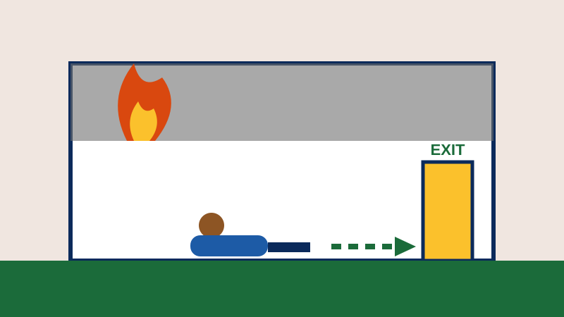

Before
- Install smoke alarms if you can and test them every month.
- Plan two ways out of every room and practise them.
- Keep exits and pathways clear of clutter.
- Agree on an outside meeting point for your household.
A fire can fill a home with deadly smoke in minutes. Prevention, early warning and a practised escape plan are what save lives.
Fires spread fastest in crowded neighbourhoods where houses are built close together and fire trucks cannot easily enter. Smoke, not flame, is the biggest danger because it rises quickly and can make you lose consciousness.
Who to follow: the Bureau of Fire Protection (BFP) and your local fire station.

| Risk | What to do |
|---|---|
| Unattended cooking | Stay in the kitchen while the stove is on. Keep towels and plastic away from the flame. |
| Overloaded sockets and old wiring | Do not plug many appliances into one extension cord. Replace damaged cords and have an electrician check old wiring. |
| LPG tanks | Check hoses for cracks, close the tank valve after cooking and keep tanks upright and in a ventilated place. |
| Candles and mosquito coils | Never leave them burning when you sleep or go out. Keep them away from curtains. |
Every March is Fire Prevention Month in the Philippines. It is a good time to hold a home fire drill.
How to prevent fires and escape safely. About 25 seconds, no sound; the steps appear as large on-screen text. Original animation made for SANDIG (see credits).
In an emergency, call 911. For the latest advice, always follow your barangay, local DRRMO and official government advisories.